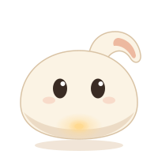
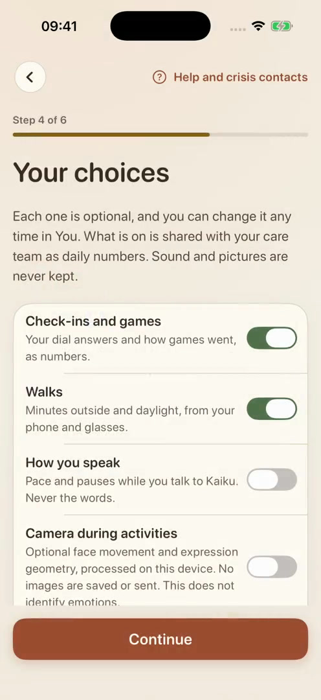
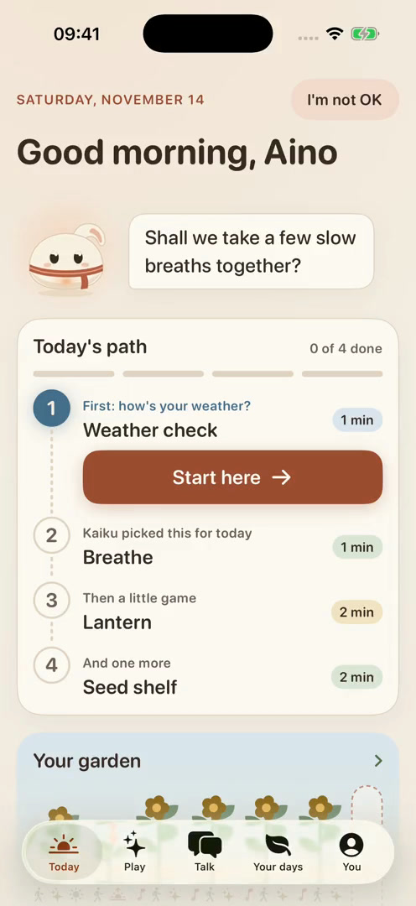
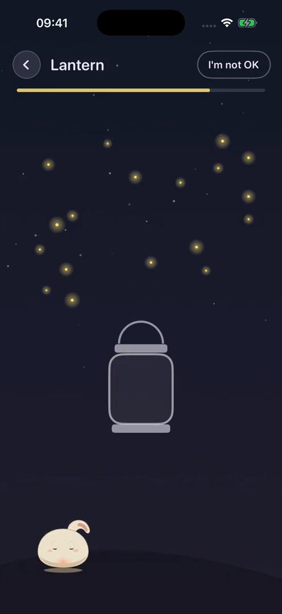
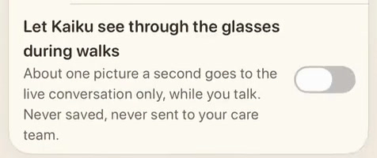
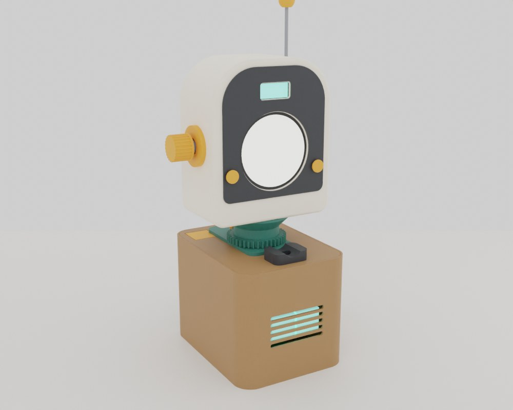
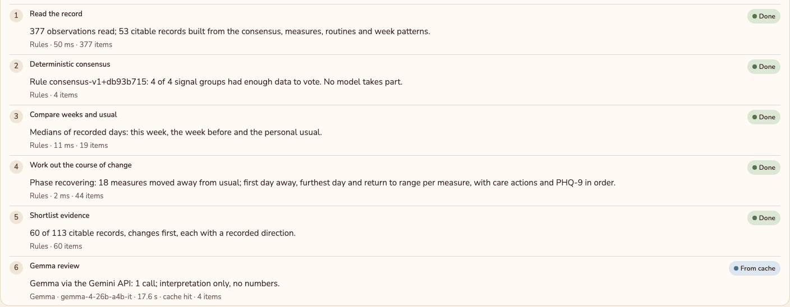
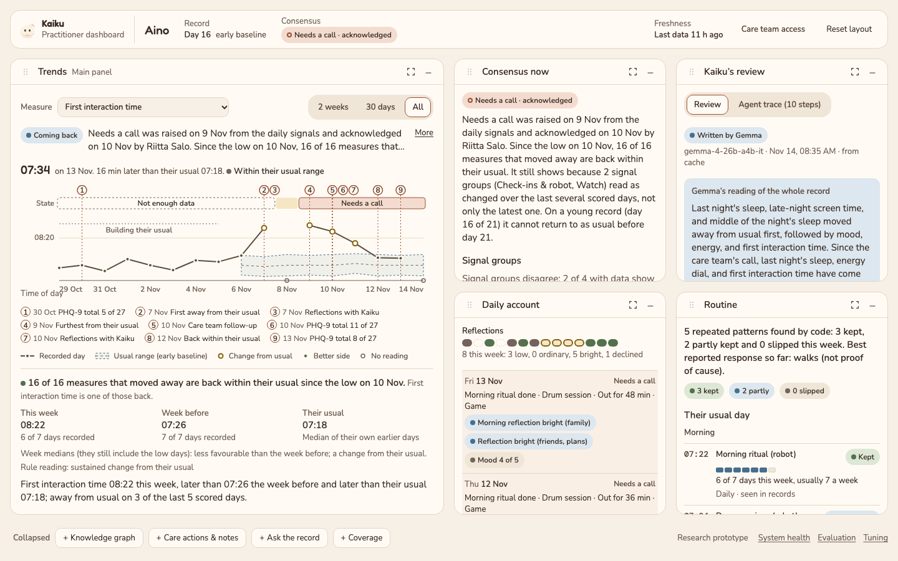

For weeks someone saw the person almost every day. Then the course ends, and nobody is looking.
A TMS course means around twenty clinic visits. When they end, the daily view of how the person is doing disappears with them.
“Even if the treatment is successful, there is a risk that depression returns.”
A further course can help, if worsening is noticed in time.
Depression takes away the initiative to open an app and report. One questionnaire or one wearable is a thin signal.
Help at home is “difficult or expensive”, and clinicians want to follow people “without adding to their workload”.
Quotes: Aalto University, “Beyond the Clinic” challenge brief (Junction 2026). Other statements: our submission text, docs/submission.md. We quote no outcome statistics.
In a clinic nobody judges a person from one measurement. Kaiku applies that at home.
Every reading keeps its real device source. The cloud rejects raw audio and images.
Four signal groups: check-ins & robot · walks & outings · apps · watch.
Each group is compared with the person’s own usual. One file combines them. No model takes part.
Gemma words what the record means; code checks every finding and renders every number.
Gemini Live is the voice that meets the feeling.
Who is worth a check-in, and the evidence one click away.
The person gets a companion, never a score.



The rule Kaiku is tested on: meet that feeling first. No advice, no cheering, no change of subject.
Screens: the real app in the iOS simulator; “Aino” is a simulated person.

The switch in the app: off by default.
Where it stands: registration and connection confirmed on real Gen 2 glasses (Developer Mode). On them (15 Nov): the self-test of speaker, microphone and camera frame passed, and a walk sent 30 frames to Gemini Live and heard the wearer. Kaiku’s replies are not yet heard in the glasses. Pilot path: one signal group in a clinic pilot, on an invite-only release channel.

Three turns of an ear: mood, energy, last night’s sleep.
One guided breath, paced by Kaiku’s words.
A short rhythm tapped on its head. No typing anywhere.
Where it stands: one Atech 14-port board carries five modules (ear dial, orientation sensor for taps, neck motor, speaker, microphone); no screen, chest light or button. On the board: the ritual by knob with no laptop, taps, the motor over MQTT, and a Gemini Live conversation through its speaker with a phone as the microphone. Not yet: its records on the dashboard, its own microphone, the talk-first flow tried by a person.
Code sets the state, renders every number and owns the crisis path. Versioned by hash; same answer tomorrow.
Chooses the evidence and words what it means. Each finding is validated: cited records must exist, forbidden wording is rejected, and a deterministic summary is the fallback.
Kaiku’s one voice. It speaks from a small prepared card and never sees scores or consensus states.
“Last night’s sleep, late-night screen time, and middle of the night’s sleep moved away from usual first, followed by mood, energy, and first interaction time.”

Agent trace, real screenshot. Every review shows its ten steps. Five of the first six are rules; Gemma makes one call, “interpretation only, no numbers”. In this prototype Gemma runs through the hosted API (gemma-4-26b-a4b-it).

Observed in an authored record, not proof of cause. A care action is recorded in Kaiku; it contacts nobody.
harrish21raj--kaiku-web.us-east.modal.run/?id=aino
Our own generator, 40 synthetic people per course, assumptions published in docs/validation.md. Reproduce with make calibrate. The numbers describe the rule, not people: no clinical validation, no sensitivity or specificity claimed.
| Challenge | What we show | Proof |
|---|---|---|
| AaltoBeyond the Clinic | Sense, respond, learn: four signal groups against her own usual, a fixed consensus, a practitioner page, a learner that favours what she responded to. | The public dashboard · calibration in docs/validation.md |
| Gemini API | Gemini Live is Kaiku’s one voice on phone, Mac, glasses and robot, with tool calls that move a ritual and a walk. Short-lived tokens, TTS, embeddings. | Real Live call with injected speech and a picture; the Talk tab in the app |
| Gemma | Gemma 4 chooses evidence and words the review; code validates each finding and renders every number. | Dashboard → Kaiku’s review → Agent trace (10 steps) |
| Modal | API, dashboard and database served from one deployed app; scheduled analytics; a parallel simulation of synthetic people; a scale-to-zero GPU class for Gemma. | The demo URL on slide 1 · one cold Gemma call on a Modal H100 (default stays the hosted API) |
| MetaAI glasses | Audio-first walk companion through the Device Access Toolkit; opt-in seeing; the walk survives the glasses coming off. | On real Gen 2: registration, the Glasses check self-test, a walk that sent 30 frames to Gemini Live |
| AtechReal World | The robot’s head on one 14-port board with five modules (ear dial, orientation sensor, neck motor, speaker, microphone), on MQTT with the hub. | On the board: the ritual by knob, taps, motor over MQTT, a Gemini Live talk through its speaker with a phone as microphone |
The thresholds come from simulation and the research literature. The next step is to set them from real days, with a clinical partner.